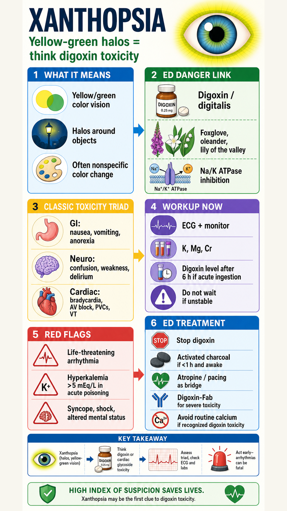

{kind=link}
{kind=link}
Xanthopsia: Digoxin/Cardiac Glycoside Toxicity
ED approach to xanthopsia as a visual clue to digoxin or cardiac glycoside toxicity: yellow-green halos/color vision change, acute versus chronic toxicity, cardiac/GI/neuro findings, ECG and lab workup, potassium risk stratification, digoxin-Fab indications and dosing concepts, decontamination, disposition, and exam traps.
ED framing
Xanthopsia is yellow-green color vision or halos around objects. In the ED it is a classic clue to digoxin/cardiac glycoside toxicity, but many patients report only nonspecific color change.
Risk clues
Chronic toxicity is common in older cardiac patients with renal decline, dehydration, diuretics, hypokalemia/hypomagnesemia, or interacting drugs such as amiodarone, calcium-channel blockers, beta-blockers, procainamide, indomethacin, or macrolides.
Findings
Look for GI symptoms, weakness, confusion/delirium, syncope, bradyarrhythmias, AV block, PVCs, ventricular arrhythmias, and bidirectional VT. Digitalis effect on ECG is not itself proof of toxicity.
Workup
Immediate ECG and continuous monitoring, IV access, potassium, magnesium, renal function, glucose, coingestants as indicated, and digoxin level. In acute ingestion, levels are most reliable after distribution, about 6 hours after ingestion.
Treatment
Stop digoxin/cardiac glycoside exposure, supportive care, activated charcoal 1 g/kg if awake/cooperative and within 1 hour, atropine 0.5-1 mg IV and pacing only as bridge for bradyarrhythmia while obtaining digoxin-Fab.
Fab triggers
Use digoxin-specific antibody fragments for life-threatening or hemodynamically significant arrhythmias, cardiac arrest, or acute poisoning with potassium >5 mEq/L. Do not wait for a digoxin level in an unstable patient.
- Primary source: local Tintinalli 9th PDF text extract, mainly Ch.193 Digitalis Glycosides, Ch.221 toxic plants/cardioactive steroids, and Ch.19 digoxin adverse effects.
- External cross-check: NCBI StatPearls Cardiac Glycoside and Digoxin Toxicity.
- Image workflow: main visual generated with Codex built-in
image_gen, then copied into the project and resized/upscaled for local browsing and GitHub Pages.